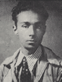
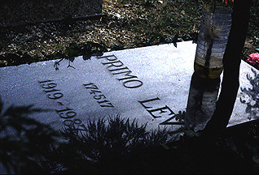

Primo Levi, nato a Torino
nel 1919, nel 1944 subì per la sua origine ebraica la deportazione
e la prigionia nel campo di concentramento di Auschwitz.
Fu uno dei pochissimi superstiti solo perché la scarsità
della manodopera consigliò ai Tedeschi, come ricordava egli stesso,
di “sospendere temporaneamente le uccisioni ad arbitrio dei singoli”. Dopo
una intensa vita di lavoro come chimico e letterato, e di studio, è
morto suicida a Torino nel 1987.
Scritto di getto nel
1946, e pubblicato nel 1947, Se questo
è un uomo descrive in forma lucida
e straziante la vita di Levi e dei suoi compagni di sofferenza, narrando
gli episodi cruciali dei mesi trascorsi nel Lager.
La drammatica testimonianza rispetta la sequenza cronologica degli avvenimenti,
mettendone a nudo gli aspetti sconvolgenti per crudeltà e degradazione,
in un inferno che devasta l’essere umano nel fisico e nello spirito, annientandone
la dignità e il rispetto di sé.
L’impegno documentario
si accompagna ad una costante esigenza dell’autore di capire e di spiegare,
a se stesso prima ancora che agli altri, i motivi di un fenomeno tanto
perverso come l’antisemitismo, ma l’amara conclusione è che nulla
può spiegare la tragedia dei campi di concentramento, e che forse
“quanto è avvenuto non si può comprendere, anzi, non si deve
comprendere, perché comprendere è quasi giustificare”.
Lo stile del racconto
non è dettato da ambizioni letterarie, ma da una profonda necessità
interiore di chiarezza; per questo l’autore si mantiene costantemente su
un registro sobrio, attento a non lasciarsi trascinare a toni patetici
o retorici e a non indulgere a particolari macabri.
Anche La
tregua (1963) ripropone il tema della deportazione, ma in questo testo,
costruito con una cura stilistica e con prospettive letterarie più
evidenti, il motivo dominante è il senso di gioia dei prigionieri
liberati, più forte di ogni altro sentimento, anche se l’ombra scura
della guerra fredda grava già sul mondo appena uscito dal conflitto.
L’autore si sofferma sugli episodi più divertenti e strani del viaggio
di ritorno dal Lager, e il gusto di narrare e il piacere dell’avventura,
nonostante lo sfondo di violenza e di devastazione, imprimono al racconto
un ritmo mosso, ravvivato sempre da un tocco di ironia.
Negli stessi anni, Levi
si dedica con alti risultati alla poesia e alla narrativa breve. Nel 1966,
sotto lo pseudonimo di Damiano Malabaila, escono le Storie naturali, una
serie di quindici racconti con cui vince il Premio Bagutta 1967, e nei
quali vengono ancora una volta denunciati gli orrori del nazismo. Al lavoro
di chimico si ispirano Vizio di forma (1971) e Il sistema periodico (1975),
una raccolta di ventuno racconti, ognuno dei quali è un pretesto
per rievocare episodi lieti o tristi della sua vita, e per ripercorrere
le tappe della sua formazione di uomo, compiuta attraverso la forzata presa
di coscienza della propria condizione di ebreo, la crescita dell’impegno
razionale e dell’intransigenza morale, in difesa della tolleranza, del
rispetto verso gli altri e della dignità umana.
La chiave a stella (1978),
che si svolge in ambiente operaio, testimonia invece l’interesse di Levi
per i rapporti che legano il lavoro alla letteratura; egli infatti affida
all’immagine di un “montatore di racconti” il compito di chiarire il modo
in cui le sue diverse attività si influenzano reciprocamente. Montatore,
ma di gru e di impianti petroliferi, è anche il protagonista, che
narra direttamente la sua storia all’autore. La struttura del romanzo determina
anche la scelta dello stile e del linguaggio, colorito ed espressivo, una
vivace mistura di italiano e di dialetto piemontese ricca di invenzioni
gergali.
Con Se non ora, quando?
(1982) lo scrittore riprende il tema della persecuzione degli ebrei; racconta
infatti le sventure di un gruppo di ebrei deportati nei Lager e l’odissea
che li aspetta per potere tornare – per chi riesce a tornare – alle proprie
case; ma si tratta stavolta di un vero e proprio romanzo di finzione, nel
quale lo scrittore non compare come personaggio e non rievoca in forma
diretta le sue esperienze personali.
Il principio di conservare
integro l’uso del pensiero e della ragione, in nome del rispetto per gli
altri e della dignità umana, anima anche l’ultima opera di Levi,
I sommersi e i salvati
(1986), un piccolo libro che sembra presagire la tragica conclusione della
sua vita. In esso l’autore sottolinea il dovere morale di non dimenticare
le tragiche conseguenze dell’intolleranza e di combattere con decisione
e senza viltà ogni forma di disprezzo nei confronti di chi è
diverso da noi: il suo è il vero e proprio testamento ideale di
un uomo sorretto per tutta la vita da una rigorosa coerenza, il quale ha
consegnato alla letteratura, ma soprattutto alla storia, un’alta lezione
di dignità e l’indicazione netta del percorso necessario per mantenere
l’integrità della coscienza morale.